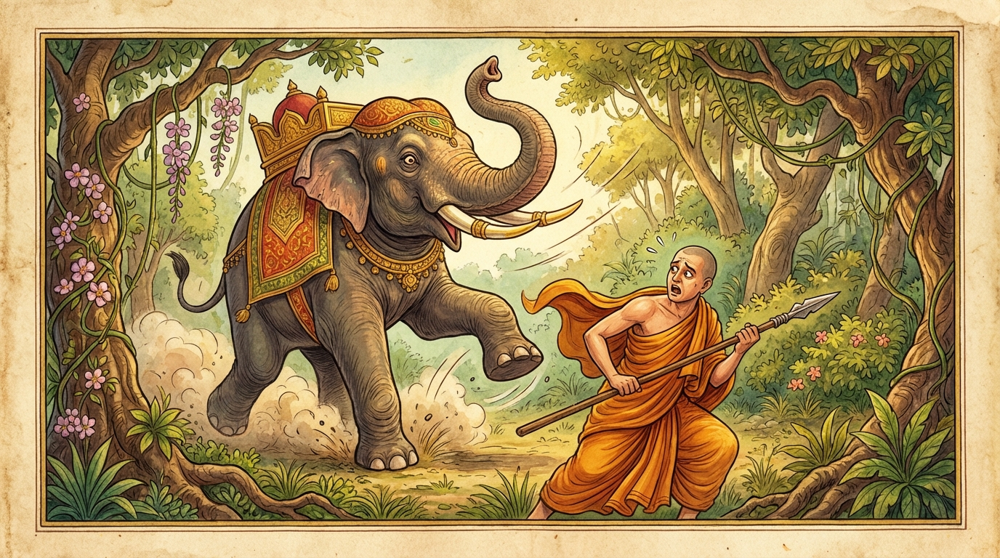

1. කාසාව ජාතකය (221)
“අනික්කසාවො කාසාවං” (කෙලෙස් කසට පහ නොකළ තැනැත්තේ කහවතට සුදුසු නොවේ) යන මේ දේශනාව බුදුරජාණන් වහන්සේ ජේතවනාරාමයෙහි වැඩවාසය කරන සමයෙහි දෙව්දත් තෙරුන් මුල්කරගෙන දේශනා කළ සේක. කථා වස්තුව රජගහ නුවරදී හටගත්තේය. එක් සමයෙක්හි ධර්ම සේනාපති සැරියුත් තෙරුන් වහන්සේ භික්ෂූන් වහන්සේලා පන්සියයක් සමග වේළුවනාරාමයෙහි වැඩවාසය කළ සේක. දෙව්දත් තෙරුන් වහන්සේද තමන්ට ගැළපෙන දුසිල් භික්ෂු පිරිසක් පිරිවරාගෙන ගයා ශීර්ෂයෙහි වැඩවාසය කළහ. එකල්හි රජගහ නුවරවාසීහු සම්මාදම් එකතු කොට දානයක් පිළියෙල කළහ. ඉක්බිති වෙළඳාම සඳහා පැමිණි එක් වෙළෙන්දෙක් මේ සළුව විකුණා මුදල් ගෙන වියදම් කොට “මාද මේ පින්කමේ කොටස්කරුවෙකු කරනු මැනවැ”යි පවසා ඉතා වටිනා සුවඳ කහවතක් දුන්නේය. නුවරවැසියෝ මහදන් පැවැත්වූහ. සියල්ල සම්මාදම් කොට එකතු කරන ලද කහවණුවලින්ම පිරිමැසුණු හෙයින් ඒ සළුව අතිරේක පූජා භාණ්ඩයක් ලෙස ඉතිරි විය. මහජනයා රැස්වී “මේ සුවඳ කහවත් සළුව අතිරේක එකකි. එය කාට දෙමුද? සැරියුත් තෙරුන් වහන්සේටද? නැතිනම් දෙව්දත් තෙරුන් වහන්සේටදැ?”යි සාකච්ඡා කළහ.
එහිදී ඇතැමෙක් “සැරියුත් මහතෙරුන් වහන්සේට දෙමු”යි කීවාහුය. තවත් පිරිසක් “සැරියුත් තෙරුන් වහන්සේ ටික දිනක් වැඩ සිට කැමති පරිදි පිටව යති. නමුත් දෙව්දත් තෙරුන් වහන්සේ නිරතුරුව අපේ නගරය ඇසුරු කොට වාසය කරති. උන්වහන්සේ මංගල අවමංගල කටයුතුවලදී අපට පිහිට වෙති. එබැවින් දෙව්දත් තෙරුන්ට දෙමු”යි කීහ. බොහෝ වාරයක් මේ ගැන කතාබහ කළ කල්හිත් “දෙව්දත් තෙරුන් වහන්සේට දෙමු”යි කියන අය වැඩි වූහ. ඉක්බිති ඒ සළුව වැඩි කැමැත්ත අනුව දෙව්දත් තෙරුන් වහන්සේට දුන්නාහුය. දෙව්දත් තෙරුන් වහන්සේ එහි කඩ කප්පවා, වාටි මසා, පඬු පොවා, රන් පටියක පැහැ ගන්වා පෙරවූ සේක. එකල තිහක් පමණ භික්ෂූහු රජගහ නුවරින් සැවැත් නුවරට වැඩම කර, බුදුරජාණන් වහන්සේට වැඳ, පිළිසඳර කතා කොට ඒ පුවත ප්රකාශ කරමින්, “ස්වාමීනි! මෙසේ දෙව්දත් තෙරුන් වහන්සේ තමන්ට නුසුදුසු අරහත් ධජය පොරවන ලද්දේය” යැයි දැන්වූහ. බුදුරජාණන් වහන්සේ, “මහණෙනි! දෙව්දත් තමන්ට යෝග්ය නොවන අරහත් ධජය පොරවන ලද්දේ දැන් පමණක් නොව, පෙරත් එසේ පොරවන ලද්දේය” යැයි වදාරා අතීත කථාව ගෙනහැර දැක්වූ සේක.
යටගිය දවස බරණැස් නුවර බ්රහ්මදත්ත රජු රජ කරද්දී බෝසතාණන් වහන්සේ හිමාලය වන පෙදෙසෙහි ඇත් කුලයෙහි ඉපදී, වැඩිවියට පත්ව, අසූදහසක් පමණ හස්ති සමූහයා පිරිවරාගෙන ඇත් රැළේ නායකයා වී වනයෙහි වාසය කළහ. ඉක්බිති එක් දිළිඳු මිනිසෙක් බරණැස් නගරයෙහි හැසිරෙන්නේ ඇත් දත්වලින් වැඩ කරන මිනිසුන් සිටින වීථියක කැටයම් කපා වළලු ආදිය කරන අය දැක “ඇත් දළ ලැබුණොත් ගන්නාහුදැ”යි විචාළේය. ඔවුහු “එසේය ගන්නෙමු”යි කීවාහුය. ඔහු ආයුධයක් රැගෙන, කහවතක් හැඳගෙන, පසේබුදුවරයෙකුගේ වේසය ගෙන, ආයුධය සඟවාගෙන, හිස්මුදුන බැඳගෙන ඇතුන් ගමන් කරන මාර්ගය අසල සිට ආයුධයෙන් ඇතුන් මරා, දළ රැගෙන බරණැස් නුවරට විකුණමින් දිවි ගෙවීය. හෙතෙම පසුකලෙක බෝසතාණන් වහන්සේගේ පිරිවර ඇතුන්ගෙන් සියල්ලට පසුව යන ඇතා මරන්නට පටන් ගත්තේය. ඇතුන් දිනපතා එකිනෙකා අඩු වන්නට වූ කල්හි “කිසියම් කාරණාවක් නිසා ඇතුන් අඩු වෙති”යි ඇතුන් විසින් බෝසතාණන් වහන්සේට සැලකළාහ.
බෝසතාණන් වහන්සේ කරුණු පරීක්ෂා කරන්නාහු “පසේ බුදුවරයෙකුගේ වෙස් ගෙන ඇතුන් ගමන් කරන මාර්ගයෙහි කෙළවරක එක් පුරුෂයෙක් සිටියි. ඔහු ඇතුන් මරයිද නොමරයිදැයි පරීක්ෂා කරන්නෙමි”යි සිතා, දිනක් ඇතුන් පෙරටු කොට තමන් පසුපසට වූහ. හත්ථි ඝාතකයා බෝසත් ඇතා දැක ආයුධය ගෙන ඉදිරියට පැන්නේය. බෝධිසත්ත්වයන් වහන්සේ නැවතී සිටියේ “පොළොවේ ගසා මරන්නෙමි”යි සිතා හොඬවැළ දිගු කළද, ඔහු පොරවාගෙන සිටි කහවත දැක “මේ අරහත් ධජයට මා විසින් ගරු කළ යුතුය”යි සිතා, සොඬවැල හකුලා ගෙන, “එම්බා පුරුෂය! මේ අරහත් ධජය නුඹට නුසුදුසු නොවේද? නුඹ කුමක් නිසා මේ සිවුර පොරවහිදැ?”යි අසා මේ ගාථාවන් වදාළහ.

“කෙලෙස් කසට පහ නොකළ, ඉන්ද්රිය දමනයෙන් හා සත්යයෙන් තොර යමෙක් කහවත දරයිද, හෙතෙම කහවත දැරීමට සුදුසු නොවේ.”
“යමෙක් වමාරා දැමූ (දුරු කළ) කෙලෙස් කසට ඇත්තේ වේද, සීලයෙහි මනාකොට පිහිටියේ වේද, දමනයෙන් හා සත්යයෙන් යුක්ත වේද, ඔහු ඒකාන්තයෙන් කහවතට සුදුසු වේ.”
යනුවෙන් මෙම ගාථාවන් වදාළ සේක.
එහි අනික්කසාවො යන්නෙන් ‘කසාව’ හෙවත් කෙලෙස් කසට අදහස් කෙරේ. එනම්:
- රාගය
- ද්වේශය
- මෝහය
- මක්ඛය (ගුණමකු බව)
- පලාසය (අනුන්ගේ ගුණ යටපත් කිරීම)
- ඉස්සා (ඊර්ෂ්යාව)
- මච්ඡරිය (මසුරුකම)
- මායා (කළ වැරදි සඟවන ස්වභාවය)
- සාඨෙය්ය (නැති ගුණ පෙන්වන ස්වභාවය)
- ථම්භය (තද ගතිය)
- සාරම්භය (එකට එක කිරීම)
- මානය
- අතිමානය
- මදය (ජාති, ගෝත්ර ආදියෙන් මත්වීම)
- පමාදය (ප්රමාදය)
යනාදී සියලු අකුසල ධර්මයෝද, සියලු දුසිරිත්ද, භවගාමී කර්මද, එක්දහස් පන්සියයක් වූ සියලු කෙලෙස්ද ‘කසාව’ නම් වේ. යම් පුද්ගලයෙකු තුළ මේවා ප්රහීණ වී නොමැති නම්, තම සන්තානයෙන් බැහැර කර නොමැති නම්, ඔහු ‘අනික්කසාව’ (කෙලෙස් කසට සහිත) පුද්ගලයා නම් වේ. කාසාවං යනු කසට රස පෙවූ, අරහත් ධජය බඳු වූ සිවුරයි. යො වත්ථං පරිදහිස්සති යනු යමෙක් මෙබඳු කෙලෙස් සහිතව මෙවැනි වස්ත්රයක් අඳින්නේ හෝ පොරවන්නේ නම් එයයි. අපෙතො දමසච්චෙන යනු ඉන්ද්රිය දමනය නම් වූ හික්මීමෙන්ද, නිර්වාණය නම් වූ පරම සත්යයෙන්ද තොර වූ බවයි. මෙහි ‘සච්ච’ යන්නෙන් වාග් සත්යය මෙන්ම චතුරාර්ය සත්යයද ගැනේ. න සො කාසාවමරහති යනු ඒ පුද්ගලයා කෙලෙස් කසටින් යුක්ත බැවින් අරහත් ධජයක් බඳු වූ කහවත දැරීමට සුදුසු නැත; එය ඔහුට යෝග්ය නොවේ.
වන්තකසාවස්ස යනු යම් පුද්ගලයෙක් ඉහත කියන ලද කෙලෙස් බැහැර කිරීමෙන්, වමාරන ලද කෙලෙස් කසට ඇත්තෙක් වේද ඔහුයි. සීලෙසු සුසමාහිතො යනු මාර්ග සීලයන්හි මෙන්ම ඵල සීලයන්හිද මනාව පිහිටි, ගෙනවුත් තබන ලද්දක් මෙන් ඒවායෙහි ස්ථාවර වූ තැනැත්තායි. උපෙතො යනු යුක්ත වූයේ යන්නයි. දමසච්චෙන යනු පෙර කියන ලද ආකාරයේ ඉන්ද්රිය දමනයෙන් හා සත්යයෙන් යුක්ත වීමයි. ස වෙ කාසාවමරහති යනු එබඳු ගුණ ඇති පුද්ගලයා මේ අරහත් ධජය වන කහවත දැරීමට ඒකාන්තයෙන්ම සුදුසු වේ.
මෙසේ බෝසතාණන් වහන්සේ ඒ පුරුෂයාට මේ කරුණ පැහැදිලි කර දී, “මෙතැන් පටන් නැවත මෙහි නොඑව. ඉදින් ආවෙහි නම් නුඹේ ජීවිතය නැති වනු ඇතැ”යි තර්ජනය කොට ඔහු පළවා හැරියහ.
බුදුරජාණන් වහන්සේ මේ ධර්ම දේශනාව ගෙනහැර දක්වා ජාතක කථාව නිමවා වදාළ සේක. “එදා ඇතුන් මැරූ පුරුෂයා දැන් මේ දෙව්දත් තෙරුන්ය. ඇත් රැළේ නායකයා වී සිටියේ මම ම නොවෙම්දැ”යි වදාළ සේක.
කාසාව ජාතක වර්ණනාව පළමුවැනියි.